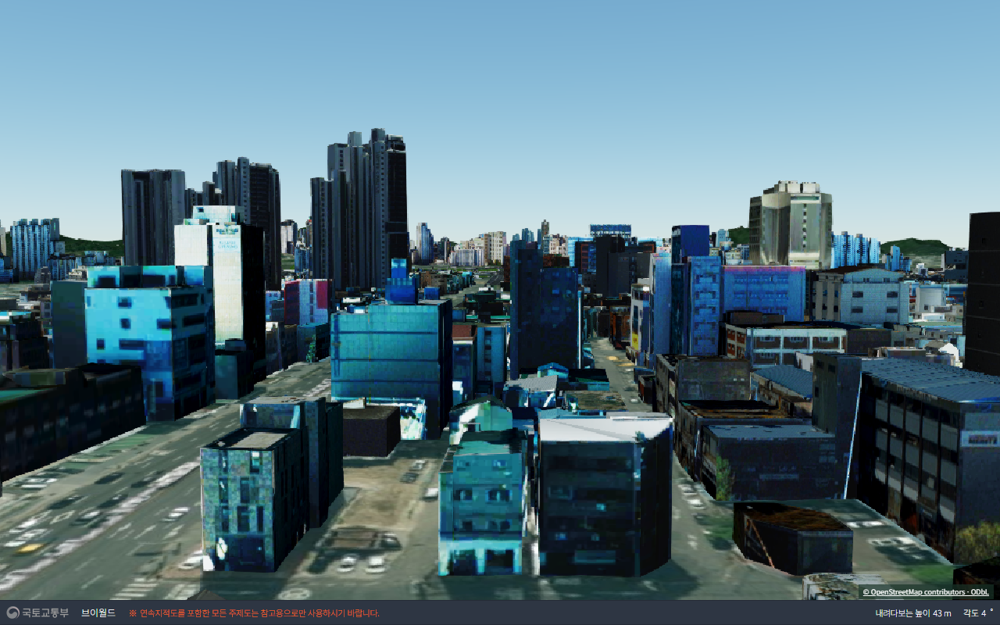
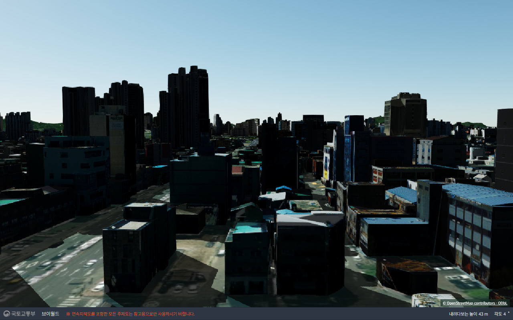
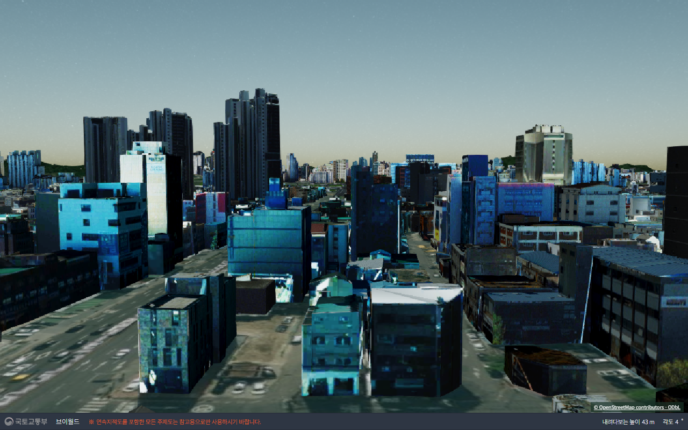
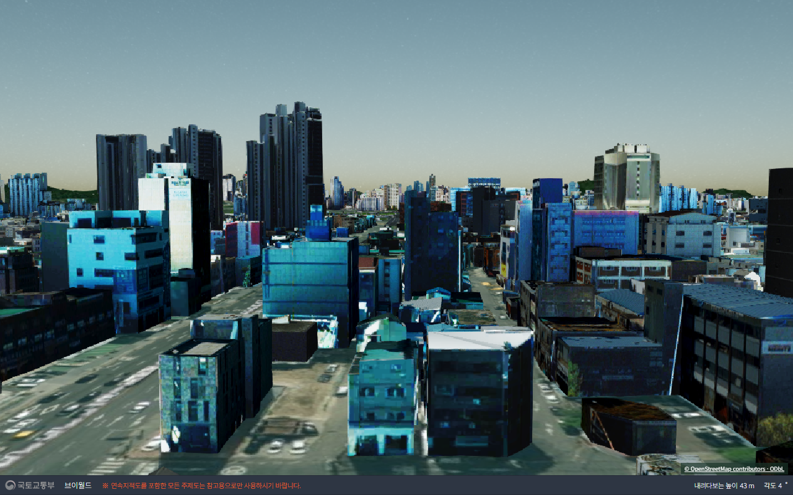
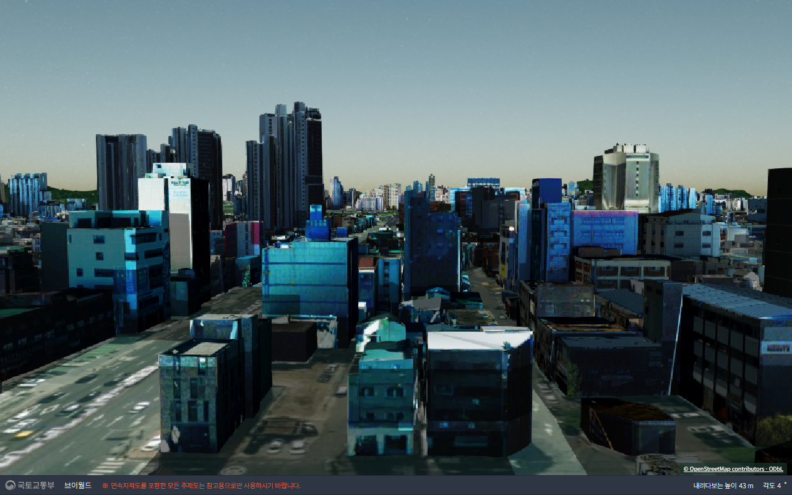

같은 선로 위치·카메라·건물 레이어에서 광원 방향만 비교했습니다. 아래 사진은 모두 실제 SDK 캡처입니다.
정면광은 기존 태양광의 검은 정면 문제를 줄였지만, 원본의 흐린 외벽이나 촬영된 그림자를 복원하지는 않습니다. 그림자 없는 정면광은 원본과 거의 비슷합니다. 하늘 색도 광원 영향을 받아 변했습니다. 기본 앱에는 아직 적용하지 않았습니다.

추가 조명 없음

건물 정면이 과하게 어두웠던 비교 화면

광선 방향을 카메라 시선과 맞춤. 그림자 끔

광원 강도1.2. 그림자 끔
그림자 켬. 일부 모형에 음영이 거칠게 나타남

정면에서 조금 위로 이동한 방향. 그림자 켬